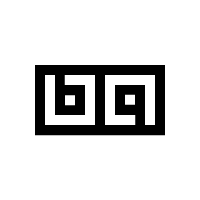

The typeface used is called inconsolata.
Download Inconsolata.zip
Note : Red is the transparent part of the image.
SVG
downloadblack on white
black on transparent
white on black
white on transparent
white on transparent
black on white
black on transparent
white on black
svg with drop shadow
download